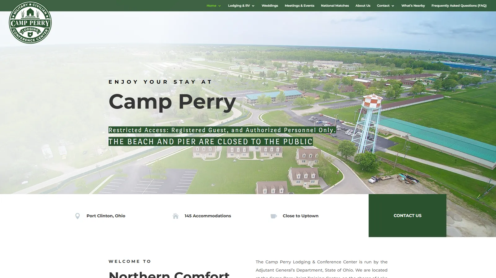
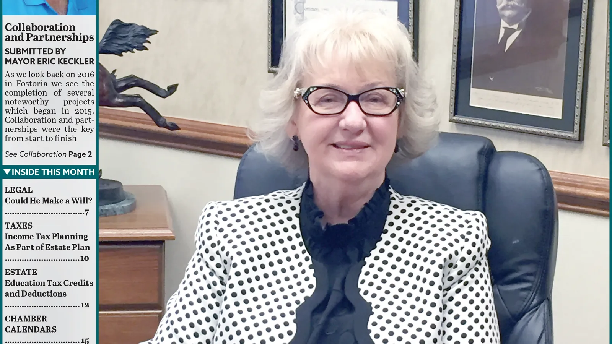
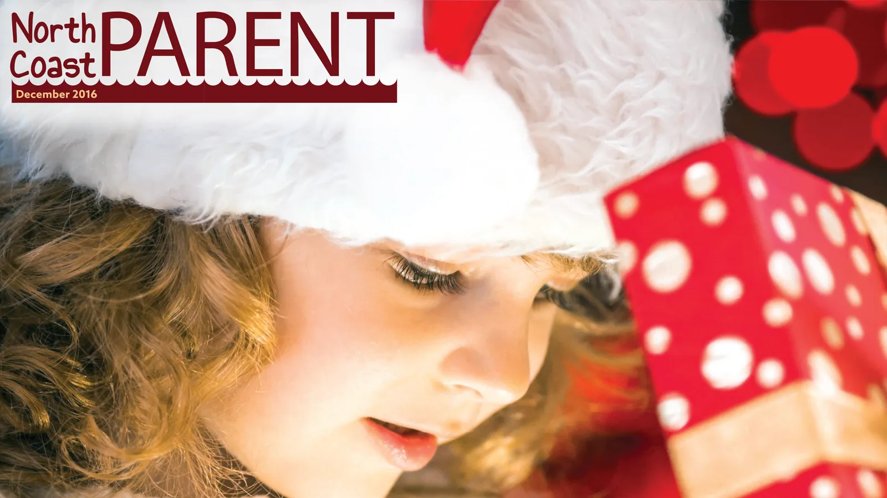
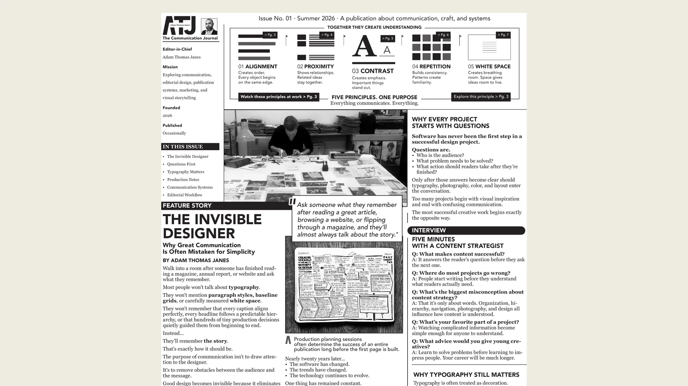
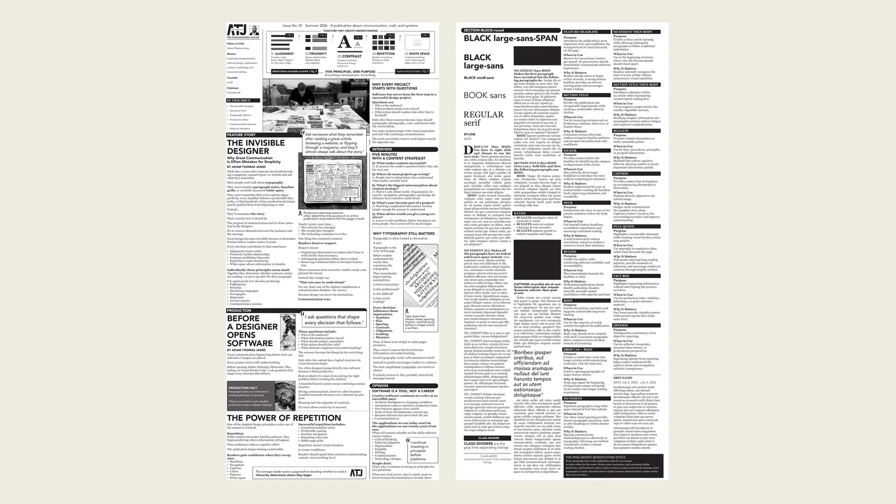

Respect the reader
Organize information so people can scan, understand, and act without working harder than necessary.
Issue No. 01 · Summer 2026 · A publication about communication, craft, and systems
Publication Designer & Communications Specialist
I deliver your message to your audience in memorable experiences.

Opening Feature · Communication Before Design
“I deliver your message to your audience in memorable experiences.”
The promise behind every project.
Editor’s Letter
A portfolio usually asks a reader to look at finished work. This issue asks a different question: what had to be understood before the work could succeed?
Across newspapers, magazines, hospitality, websites, advertising, and brand systems, the visible design was only one part of the assignment. The deeper work was editorial—listening, researching, sorting competing priorities, building hierarchy, and creating a dependable way for people to understand and use information.
The features that follow are presented as stories rather than trophies. Each begins with a communication problem, traces the decisions that shaped the solution, and shows what the final system made possible. Together, they form a record of how I work: communication first, design in service of it, and production strong enough to last.
Editorial Perspective
Clarity, invitation, persuasion, and enough information to decide with confidence.
Strong work begins with alignment, proximity, contrast, repetition, and hierarchy. Those fundamentals create order and visual appeal. The deeper responsibility is deciding what readers need, how much a page can carry, and how typography can make substantial information feel approachable.
Organize information so people can scan, understand, and act without working harder than necessary.
Hierarchy, spacing, rhythm, and emphasis can carry more information without making a page feel crowded.
Organizations hire me to reach their audience in a way that feels credible, welcoming, and worth engaging with.
My marketing approach is informed by evidence-based persuasion principles, including reciprocity: give the audience something useful, then make the next step easy.
The Hiring Brief
The Main Features
Six assignments, each beginning with a communication problem.

Feature One · A lodging identity and guest-information system, 2018–2020
The story Camp Perry did not simply need a newer website. It needed a coherent explanation of what the property was, whom it served, and why military teams, tourists, wedding parties, conference groups, and RV travelers should trust it.
The editorial decision I organized the operation as one connected guest experience: identity, photography, a responsive WordPress site, room and venue information, maps, floor plans, brochures, reservation emails, merchandise, and everyday guest documents. Each piece answered a different question, but all spoke in the same voice.
What changed Guests regularly praised the site’s ease of use and the operation’s increased professionalism. The system remained useful after handoff, requiring only minor copy changes rather than a redesign.

Feature Two · Identity redesign and 32-page monthly production, 2014–2017
The story The journal needed to feel current without losing the departments, chamber information, advertising structure, and regional familiarity its readers already relied on.
The editorial decision I treated the redesign as an evolution rather than a rupture: a new teal identity, a stronger typographic system, reusable master pages and styles, and a complete monthly production workflow built around real editorial and advertising demands.
What changed The March 2017 redesign was received positively by readers and management. The templates, styles, and teal identity continued after my departure—evidence that the system belonged to the publication, not only to its designer.
Feature Three · Newspaper identity redesign and deadline-driven weekly production
The story The Beacon arrived each week whether the production process was elegant or not. The challenge was to modernize an inherited identity and replace handwritten, inconsistent methods without interrupting publication.
The editorial decision I redrew the lighthouse mark, rebuilt the masthead and page system, and standardized ad intake, file naming, repetitive formatting, and issue assembly across four publications. The design work and the workflow work were inseparable.
What changed The newspaper gained a more flexible identity and a repeatable production system capable of supporting issues from 10 to 26 pages under same-day deadlines.

Feature Four · Monthly magazine art direction and recurring production
The story A free parenting magazine has to feel useful, welcoming, and new each month—even when the production schedule, recurring departments, and limited resources remain constant.
The editorial decision I created issue-specific masthead treatments, expressive center spreads, complete page compositions, advertisements, and house promotions while maintaining a dependable underlying system. Variety happened on the surface; consistency lived underneath.
What changed The publication developed a lively, cohesive reading experience, while efficient production methods helped one designer sustain four recurring publications and a high volume of advertising.


Hover, focus, or tap · View both pagesFeature Six · Free Adobe InDesign template, finished PDF, and documented editorial system, 2026
The story A useful template should do more than provide empty boxes. It should reveal the editorial thinking, hierarchy, grid, typography, and production logic that make a publication dependable.
The editorial decision I built a two-page Adobe InDesign newspaper system using a six-column structure, Avenir and Georgia, reusable paragraph styles, front-page departments, production notes, and a second page that explains why each style exists.
What visitors receive The Library includes the editable InDesign template, a finished reference PDF, and optimized preview pages. The resource is designed to be studied, adapted, and used as a starting point for communication-first publication work.

Feature Five · Personal identity development and responsive logo system, 2026
The story The portfolio needed a mark that could represent nearly two decades of editorial, communications, web, and production work without collapsing that career into a familiar design-industry symbol.
The editorial decision I treated the logo as a system rather than a single decoration. The identity was built in Adobe InDesign, where I work most naturally with typography, spacing, alignment, and editorial systems. Illustrator remains useful when a file requires it, but InDesign allowed the forms to develop inside the same environment I use to construct publications. The finished marks were exported as clean, scalable SVG assets for responsive use. Iterations tested custom geometry, Avenir-derived forms, magenta accents, quotation marks, ribbons, and name lockups before restraint, negative space, and a bold black monogram emerged as the strongest direction.
What changed The final system separates a compact primary mark from a larger signature lockup, allowing the identity to scale from favicon and website header to publication cover, résumé, presentation, and downloadable editorial resource.
The Publisher's Mark
The monogram identifies the publication. The signature lockup identifies the person. The surrounding editorial system—Georgia, Avenir, black, paper tones, and CMYK registration accents—connects the website, résumé, resources, and case studies without forcing every application into one rigid logo arrangement.


Departments
Editorial, digital, identity, campaign, and production work.
These are the working departments behind the issue: long-form publications, websites, identity systems, campaigns, production, and responsive content. They are listed separately here, but in practice they often meet inside the same assignment—sharing one audience, one message, and one standard of finish.
Anything that can be printed—from a single cover or advertisement to a complete recurring publication—designed in Adobe InDesign with engaging typography, clear hierarchy, and dependable production.
Visually engaging, responsive websites designed to make an organization look professional and help people find, understand, and act on its information.
Complete brand systems built from the floor up—or focused identity projects that give an existing organization a more professional, recognizable, and consistent presence.
Advertising for events, restaurants, services, publications, and everyday businesses—including copy-heavy assignments made readable and compelling through strong typographic design.
Complete publication assembly, supplied-file repair, preflight, printer coordination, and press-ready delivery—supported by reusable systems that reduce errors and make recurring work faster.
Responsive email and supporting content that extends a communication system beyond the website or printed page while remaining useful, accessible, and consistent with the brand.
Available for part-time remote roles, freelance projects, and contract engagements. I work from Tiffin, Ohio, and can attend occasional local meetings when a project benefits from them.
Editor’s Note
Back Issues
A selected record—not a file dump.
The archive works like a shelf of back issues: selected campaigns, identities, publications, and production pieces that add range to the main features without overwhelming the reader. Each entry is included because it reveals a useful decision, constraint, or way of working.
Advertising / Campaign Design
A curated collection of real client advertising across hospitality, events, automotive, retail, and community services—including three award-winning Beacon advertisements.
Behind the Pages
The practical sequence that turns raw information into finished communication.
Every finished page has a backstage. Mine begins with conversation and research, moves through scope and direction, then uses real content to test the system before delivery. The sequence is practical by design: it keeps decisions visible, feedback useful, and the final work maintainable.
Use the Left and Right Arrow keys to move through the communication process tabs. Use Home for the first tab and End for the last tab. Tab moves to the next interactive control.
I ask about budget, goals, deadlines, audience, competition, differentiators, priorities, and which materials are available now or can be retrieved. For print, I also confirm requirements with the target printer when needed.
I translate discovery into a written scope with deliverables, responsibilities, schedule, approval milestones, revision rounds, pricing, and milestone payments. The scope identifies a designated client lead and explains how additional revisions or changes in direction will be handled.
We examine color and type psychology, visual conventions within the industry, useful competitive references, and what the organization should emphasize. For identity work, this becomes the logo, palette, typography, and supporting visual language.
I research, explore directly in InDesign or Figma, and shape the system by moving real content through the layout. Print work is built for its final production method; lighter websites may begin from a sound template and be developed with HTML, CSS, JavaScript, Figma, and AI-assisted coding under my direction.
I share work by email, private staging link, online file delivery, or live call—whichever supports the client best. A designated lead provides consolidated feedback at each milestone, with two revision rounds included by default. I rarely consider the first version finished: for websites, I may compare alternate call-to-action phrasing, imagery, hierarchy, or navigation through A/B testing and iterative refinement to learn which approach produces a stronger response. Additional revisions or changes in scope are discussed and priced before I proceed.
I provide production-ready files, organized source files, reusable templates, brand assets, documentation, credentials, training, printer delivery, or web launch as the project requires. I can also support future updates and maintenance.
Profile
The roles and environments that shaped the practice.
When I graduated, I thought I was becoming a web designer. Eighteen years later, I understand that I became a communicator who uses websites, publications, branding, photography, marketing, SEO, AI, and print to solve different kinds of problems.
About a year after joining Schaffner Publications, the other designer left unexpectedly. I had become fast enough to finish early, but hourly pay meant greater efficiency could reduce my income. I proposed a better arrangement: rather than hiring another designer, the company could trust me to manage the workload independently. In 2015, I negotiated a salaried position and became the sole production designer for four recurring publications and a high volume of advertising.
Redesigning The Beacon changed how I understood the effect design could have on a community. I rebuilt the front page, overall identity, interior templates, typography, section treatments, and recurring departments at the same time. Seeing people around town carrying something I had reshaped made the work tangible. The newspaper looked inviting, relevant, and worth picking up rather than like something readers might pass over.
People often think communication means fitting as much information as possible into a design. Usually, the opposite is true. A dense block of text can make readers move on, while a strong headline, pull quote, or carefully chosen image gives them a reason to stop. Good communication is not measured by how much information fits. It is measured by how much the audience understands.
I begin with an interview, not a blank design file. I gather the client’s copy, images, past projects, brand materials, and anything else that may reveal where the organization has been. I organize those materials into a consistent client and project folder structure so they can be researched, referenced, and reused thoughtfully. Only then do we decide where the work should go next.
I rely on reusable InDesign styles, GREP-assisted formatting, Creative Cloud Libraries, customized workspaces, consistent naming conventions, SEO worksheets, interview questionnaires, and practical documentation. These systems reduce repetitive work, protect consistency, and make projects easier to maintain or hand off. The finished design matters, but so does the structure that allows the next page, campaign, or person to begin well.
Curiosity has been one of the constants of my career. Nearly 500 audiobooks across psychology, behavioral science, communication, ethics, philosophy, conflict, persuasion, decision-making, and technology have shaped how I understand audiences and ask questions. My first reaction to generative AI was fear; using it showed me that it can reduce the tedious parts of the work and leave more time for judgment, message, structure, and the experience people actually see.
The software has changed dramatically over the past two decades. My goal has not. Every project still begins the same way: understand the people, organize the information, remove unnecessary complexity, and build something that helps someone else understand it.
Partner with organizations to create publications, custom HTML, CSS, and JavaScript websites, WordPress sites, marketing communications, brand materials, email campaigns, sales collateral, and digital content for government, publishing, hospitality, and business organizations.
Manage projects from discovery through production and delivery—organizing the work, keeping files clean, meeting deadlines, solving the unglamorous production problems, and building long-term client relationships.
While handling reservations and conference-center operations, identified gaps in the guest experience and earned an expanded assignment as the sole designer and communications lead for a complete modernization.
Created the identity, logo system, responsive Divi and WordPress website, property photography, brochures, business cards, maps, floor plans, guest documents, responsive RoomMaster confirmation and cancellation emails coded in MJML, merchandise graphics, and on-site collateral. Established the GoDaddy account, hosting, HTTPS certificate, backups, SEO plugins, and analytics, then trained the event director and delivered logo formats, templates, credentials, and maintenance documentation.
Instructed undergraduate Digital Media Technology courses focused on web design, HTML/CSS, WordPress, Adobe Brackets, Emmet, Photoshop, graphic design, and digital communications.
Developed curricula, syllabi, assignments, examinations, instructional materials, and recorded lectures while managing multiple courses with enrollments of up to 60 students.
Teaching strengthened a skill that runs through all of my work: explaining technical and visual ideas in ways people can understand and apply.
Joined Mark Schaffner in an established publication operation that had also relied on rotating, short-term graphic designers. I redesigned The Beacon and North Coast Business Journal, gave North Coast Parent stronger issue-by-issue art direction, and produced those titles alongside the monthly HOMES real-estate publication.
My official title remained Production Graphic Designer throughout. In 2015, after Mark stopped sharing production work, I recognized that my speed and efficiency made the hourly arrangement increasingly impractical. I proposed that the company trust me with the complete workload rather than trying to hire another designer, negotiated a salaried position, and became the sole production designer responsible for assembling all four publications and creating much of the advertising.
My command of keyboard shortcuts, production scripts, reusable templates, GREP and style-based formatting, standardized ad intake, file naming, client-supplied ad repair, CMYK prepress, printer coordination, FTP delivery, weekly online issue publishing, and archiving let me maintain the publication schedule and high-volume client advertising without a second designer, including three MACPA award-winning Beacon ads.
Across the publications and other print projects, I combined marketing experience with contrast, repetition, alignment, and proximity to establish hierarchy, make information easier to navigate, and shape each message for its intended audience.
A career built through publishing, communications, web practice, and formal digital-media study. My web-development and design education explains why the work moves comfortably between editorial structure, interface thinking, technical production, and visual communication.
International Academy of Design & Technology · 2011
Cum Laude · 3.68 GPA
Upper-division study expanded a web-design foundation into development, systems, programming, security, mobile applications, database work, and professional production.
International Academy of Design & Technology · 2009
Magna Cum Laude · 3.89 GPA
Built a formal foundation in visual communication and web production through dedicated study in typography, page layout, interface design, programming, multimedia, and portfolio presentation.
Reference Library
Systems built to help good work continue after handoff.
The Reference Library turns production experience into reusable templates, checklists, and guidance. These resources belong in the issue because communication is not only the finished artifact—it is also the structure that helps the next issue, page, or team begin well.
001 / Free Adobe InDesign Resource
A production-ready two-page editorial system built to demonstrate professional publication hierarchy, a modular six-column structure, reusable paragraph styles, and the communication purpose behind each style.
Need a custom publication or communication system now? Start a conversation.
Production Desk
The tools change. The responsibility to deliver does not.
Principles Before Platforms
I am most at home in Adobe InDesign—working with type, building pages, producing advertisements, and turning a collection of stories and assets into a finished publication. Newspaper production brought those skills together in a way I loved: editorial judgment, deadlines, typography, advertising, problem-solving, and the satisfaction of sending a complete issue out the door.
The software is important, but it is not the whole practice. When tools change, I learn another way to do the work. What remains is the ability to understand a client’s needs, organize the moving parts, make sound decisions, and carry communication from planning through production and delivery.
Use the Up and Down Arrow keys to move through the production categories. Use Home for the first category and End for the last category. Tab moves to the next interactive control.
The center of the practice
Build newspapers, magazines, reports, proposals, sales materials, advertisements, and long-form documents from raw content through final production. InDesign is the primary workbench because it brings typography, hierarchy, image handling, reusable styles, advertising, preflight, and page-level judgment into one production environment.
Why I reach for it: Publication work lets me solve the entire communication problem—not only how something looks, but how it is organized, read, updated, proofed, printed, and delivered.
Messages built to perform
Create print and digital advertising, sales collateral, campaign materials, direct communications, and coordinated visual assets that support a clear offer and a specific audience response. The work combines copy, hierarchy, imagery, brand standards, production constraints, and practical marketing judgment.
Why it matters: Clients rarely need only a page or an ad. They need the surrounding message, supporting materials, revisions, production files, and dependable follow-through that make the campaign usable.
Structure that survives handoff
Turn recurring communication needs into templates, style systems, content structures, production checklists, documentation, and organized asset libraries. These systems reduce repeated decisions, help teams maintain quality, and make future work faster without sacrificing clarity.
Why I build systems: A finished piece solves today’s problem. A well-documented system helps the client continue producing good work after the original project is complete.
A supporting channel—not the whole identity
Translate communication systems into accessible, responsive websites and digital experiences using semantic HTML, CSS, JavaScript, WordPress, SEO, analytics, and AI-assisted development. Digital work extends the editorial practice by applying the same attention to hierarchy, navigation, readability, and maintainable content.
Why I use it: Sometimes the right final format is a publication; sometimes it is a website, email, landing page, or downloadable resource. The medium follows the communication need.
One accountable path from brief to release
Manage overlapping assignments, changing priorities, stakeholder input, production schedules, proofs, revisions, file preparation, and final delivery. Nearly two decades of publication and communication work have made coordination part of the craft rather than a separate administrative step.
What clients gain: One professional who can understand the larger need, handle many connected deliverables, communicate clearly, protect quality, and keep the work moving toward a finished result.
Issue Notes
How Issue No. 01 was written, designed, built, and delivered.
Adam Thomas Janes
Avenir for structure, navigation, and modern editorial clarity. Georgia for warmth, readability, and long-form rhythm.
Semantic HTML, modern CSS, vanilla JavaScript, structured data, responsive design, and lightweight static architecture.
Accessibility, SEO, maintainability, cross-device reading, performance, keyboard navigation, and long-term content growth.
Editorial rhythm, CMYK accents, page folios, running heads, crop-mark details, careful hierarchy, and reader-first communication.
Issue No. 01 · Summer 2026 · First edition of an ongoing portfolio publication